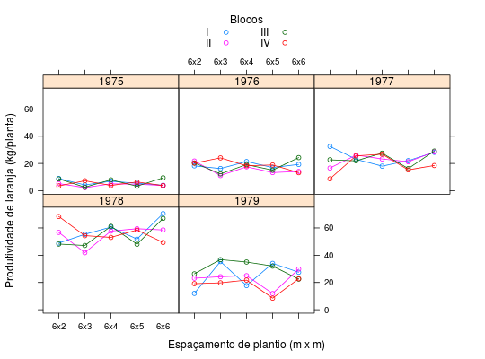
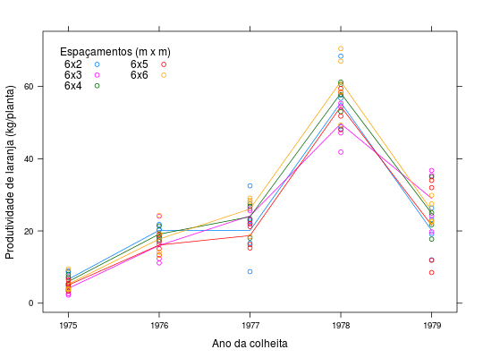

Dados de produtividade de laranja, em kg por planta, de um ensaio em blocos casualizados estudando o efeito do espaçamento de plantio de laranjeira Valência (clone novo) sobre trifoliata realizado na Estação Experimental de Limeira (IAC, SP). As colheitas foram obtidas em 5 anos consecutivos, portanto, trata-se de um estudo longitudinal.
Um data.frame com 100 observações e 4 variáveis, em
que
anoblocespacprodBARBIN (2013), Exercício 17, pág. 209.
library(lattice) data(BarbinEx17)#> Warning: data set ‘BarbinEx17’ not foundstr(BarbinEx17)#> 'data.frame': 100 obs. of 4 variables: #> $ ano : int 1975 1975 1975 1975 1975 1976 1976 1976 1976 1976 ... #> $ bloc : Factor w/ 4 levels "I","II","III",..: 1 1 1 1 1 1 1 1 1 1 ... #> $ espac: Factor w/ 5 levels "6x2","6x3","6x4",..: 1 2 3 4 5 1 2 3 4 5 ... #> $ prod : num 9 4.25 7 5.5 4.05 ...with(BarbinEx17, addmargins(tapply(prod, list(espac, bloc, ano), FUN = sum)))#> , , 1975 #> #> I II III IV Sum #> 6x2 9.00 5.25 8.7 3.50 26.45 #> 6x3 4.25 2.25 2.6 7.35 16.45 #> 6x4 7.00 5.10 8.0 3.85 23.95 #> 6x5 5.50 4.80 3.3 6.45 20.05 #> 6x6 4.05 3.85 9.5 3.75 21.15 #> Sum 29.80 21.25 32.1 24.90 108.05 #> #> , , 1976 #> #> I II III IV Sum #> 6x2 18.25 21.80 20.40 20.25 80.70 #> 6x3 16.30 11.15 12.35 24.10 63.90 #> 6x4 21.40 17.55 19.15 18.35 76.45 #> 6x5 17.05 13.35 15.10 18.90 64.40 #> 6x6 19.30 14.15 24.30 13.25 71.00 #> Sum 92.30 78.00 91.30 94.85 356.45 #> #> , , 1977 #> #> I II III IV Sum #> 6x2 32.50 16.65 22.70 8.75 80.60 #> 6x3 23.05 26.10 21.95 25.60 96.70 #> 6x4 18.05 23.30 27.55 26.80 95.70 #> 6x5 22.05 21.25 16.25 15.30 74.85 #> 6x6 28.15 28.55 29.10 18.50 104.30 #> Sum 123.80 115.85 117.55 94.95 452.15 #> #> , , 1978 #> #> I II III IV Sum #> 6x2 48.90 56.75 48.20 68.40 222.25 #> 6x3 55.35 41.85 47.15 54.35 198.70 #> 6x4 60.60 57.70 61.20 53.05 232.55 #> 6x5 51.80 59.45 48.05 58.45 217.75 #> 6x6 70.50 58.55 67.00 49.35 245.40 #> Sum 287.15 274.30 271.60 283.60 1116.65 #> #> , , 1979 #> #> I II III IV Sum #> 6x2 12.00 23.15 26.35 19.15 80.65 #> 6x3 35.35 24.25 36.75 19.75 116.10 #> 6x4 17.75 25.00 35.00 21.75 99.50 #> 6x5 34.00 11.90 32.00 8.50 86.40 #> 6x6 27.50 29.85 22.50 22.75 102.60 #> Sum 126.60 114.15 152.60 91.90 485.25 #> #> , , Sum #> #> I II III IV Sum #> 6x2 120.65 123.60 126.35 120.05 490.65 #> 6x3 134.30 105.60 120.80 131.15 491.85 #> 6x4 124.80 128.65 150.90 123.80 528.15 #> 6x5 130.40 110.75 114.70 107.60 463.45 #> 6x6 149.50 134.95 152.40 107.60 544.45 #> Sum 659.65 603.55 665.15 590.20 2518.55 #>xyplot(prod ~ espac | as.factor(ano), groups = bloc, data = BarbinEx17, type = c("p", "a"), as.table = TRUE, xlab = "Espaçamento de plantio (m x m)", ylab = "Produtividade de laranja (kg/planta)", auto.key = list(columns = 2, cex.title = 1, title = "Blocos"))xyplot(prod ~ ano, groups = espac, data = BarbinEx17, type = c("p", "a"), xlab = "Ano da colheita", ylab = "Produtividade de laranja (kg/planta)", auto.key = list(corner = c(0.05, 0.95), columns = 2, cex.title = 1, title = "Espaçamentos (m x m)"))